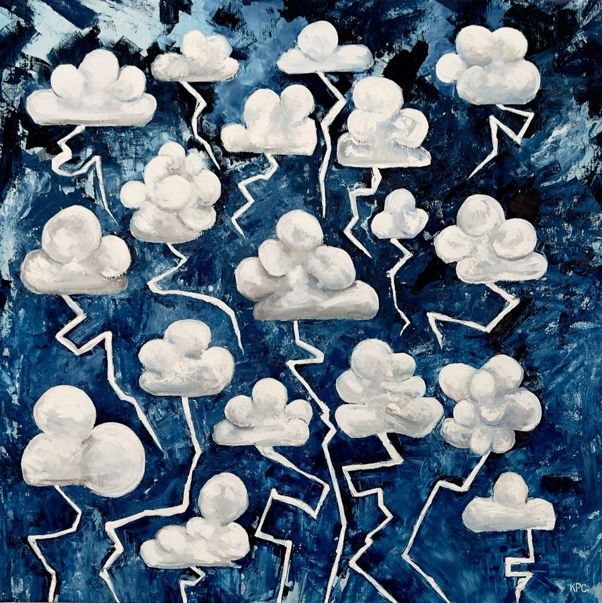

The art of
A reel of painting, prints & installation
Believing in a future is not the same thing as living through a future. Scroll the strip — each frame a work, in sequence.
Scroll right →

Above the Clouds
Oil on linen · 2024

The River in the Sky
Oil on canvas · 2024

First Contact
Oil on canvas · 2023

Saturday Evening Owls
Oil on linen · 2022

Once, Creatures Existed
Installation · 2022

Airlift
Drypoint, ed. 12 · 2021

The Mother Bear
Oil on canvas · 2021